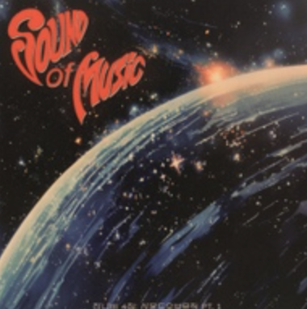
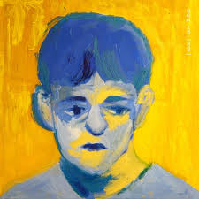

모든 소년 소녀들 2: 무지개
무지개는 우리가 어른이 되며 잃어버린 '마음의 색깔'이며, 잔나비는 이 곡을 통해 그 색을 다시 한번 기억해보자고 손을 내밉니다.

호이호이호이호이 안녕하세요 호이입니다
안녕하세요 반갑습니다. 저는 충청도에서 태어났어요. 저는 스포츠를 좋아합니다. 특히 야구를 좋아하는데요. 한화 이글스를 13년째 응원하고 있습니다. 요즘에는 F1에 관심이 생겨서 종종 보고 있어요.
티스토리 블로그 | GitHub| 이름 | 조상준 |
|---|---|
| MBTI | ISTJ |
| 취미 | 운동 |
| 좋아하는 음식 | 두찜 부대찜닭 최고 |
여행



무지개는 우리가 어른이 되며 잃어버린 '마음의 색깔'이며, 잔나비는 이 곡을 통해 그 색을 다시 한번 기억해보자고 손을 내밉니다.

어린 시절의 '꿈'과 교과서 속 '책'을 뒤로하고, 냉혹한 현실의 '힘'과 '벽'을 마주하며 비로소 어른이 되어가는 청춘의 성장통과 찬란한 위로를 담은 곡입니다.
오늘 새롭게 배운 것들을 기록합니다.
header, nav, main, section, article, footer 등 시멘틱 태그의 역할과 사용법을 배웠다.